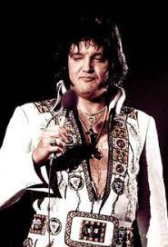

Biografia de Elvis Presley
Elvis Presley (1935-1977) foi um cantor norte-americano, considerado o maior ídolo do rock'n roll mundial. Entrou para a história musical como o Rei do Rock. Entre suas músicas destacam-se: That's All Right, Love Me Tender, It's Now or Never e Kiss Me Quick.
Elvis Aron Presley nasceu em East Tupelo, Mississipi, Estados Unidos no dia 08 de janeiro de 1935. Filho de Vernon Presley e Gladys Presley, nasceu de um parto difícil, de gêmeos, onde seu irmão não sobreviveu.
Em 12 de setembro de 1948, sua família mudou-se para Memphis, Tennessee, onde passou sua infância.
Participava do coro da igreja evangélica local e recebeu influência do blues. Aprendeu a tocar guitarra e participou de concursos de música em sua cidade.
De família pobre, Elvis trabalhou como lanterninha de cinema e como caminhoneiro. Em 1953, concluiu seus estudos secundários.

Início da carreira
Em 1954, Elvis foi contratado pelo produtor musical de rhythm and blues Sam Phillips, então a procura de um cantor branco que cantasse um blue legítimo.
Em 1954 Elvis gravou seu primeiro disco, um compacto com as músicas "That's all right" e "Blue Moom of Kentucky". Suas apresentações encantavam as plateias. No dia 2 de outubro fez sua primeira apresentação fora de seu estado, em Atlanta, Geórgia.
Em 1955, foi contratado pela gravadora RCA Victor. Suas novas músicas "Mystery Train" e "Baby Let's Play House", logo ocuparam as paradas de sucesso.
Suas apresentações nos programas de rádio e televisão fascinavam o público. Em 1956, Elvis apresentou-se no programa de televisão dos irmãos Dorsey e logo seu álbum "Heartbreak Hotel" alcançou em um ano a marca de nove milhões de cópias vendidas.
Elvis Presley iniciu suas apresentações internacionais, encantando e escandalizando as plateias, com suas roupas estravagantes e sua maneira exagerada de rebolar.
Filmografia do Rei do Rock
De acordo com a jornalista Rafaela Marobin, o Rei do Rock protagonizou mais de 30 filmes, que você pode conferir no link acima. E também gravou incrívelmente mais de 700 músicas, das quais você pode ouvir algumas no vídeo abaixo:
Música e Amor
Em 1958, foi convocado para servir o exército. No dia 14 de agosto, morreu sua mãe. Em outubro foi transferido para uma base militar dos Estados Unidos, na Alemanha, onde ficou até março de 1960.
De volta a sua cidade, retornou aos palcos e apresentou-se no programa The Frank Sintra Show.
O sinuoso movimento que executava com os quadris ao dançar, valeu-lhe o apelido de “Elvis the Pelvis”.
Elvis Presley participou de vários filmes, entre eles, “Love me Tender” (1956), "Fun in Acapulco" (1963) e "Viva Las Vegas" (1964).
No dia 1 de maio de 1967 Elvis casou-se com Priscilla Presley, em Las Vegas. No dia 1 de fevereiro de 1969 nasceu Lisa Marie Presley.

Durante os anos 70, Elvis realizou grandes shows e se apresentou em Las Vegas, em várias temporadas.
Elvis gravou novo disco, e as músicas "Suspicious Minds" e "In the Ghrtto", despontam nas paradas. Com seu rebolado provoca reações histéricas nas plateias adolescentes.
Em janeiro de 1973, separa-se definitivamente de Priscilla Presley.
No auge de sua carreira, apresentou sérios problemas de saúde: estava acima do peso e viciado em remédios controlados evitava aparecer em público. No dia 21 de junho de 1977, Elvis Presley fez seu último show em Los Angeles.